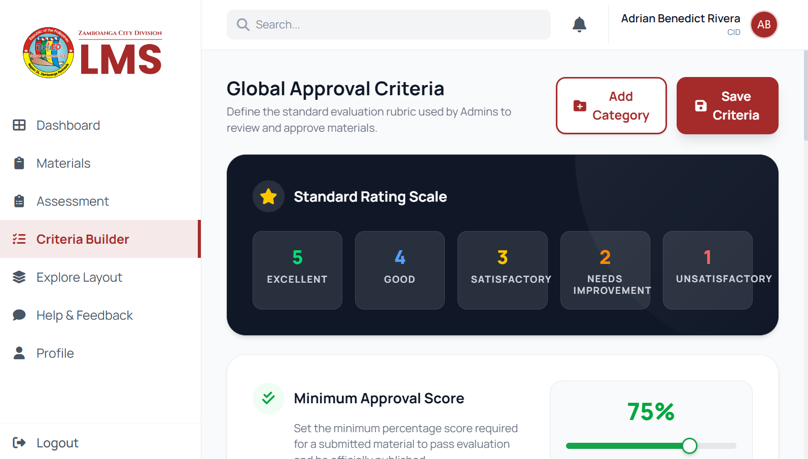
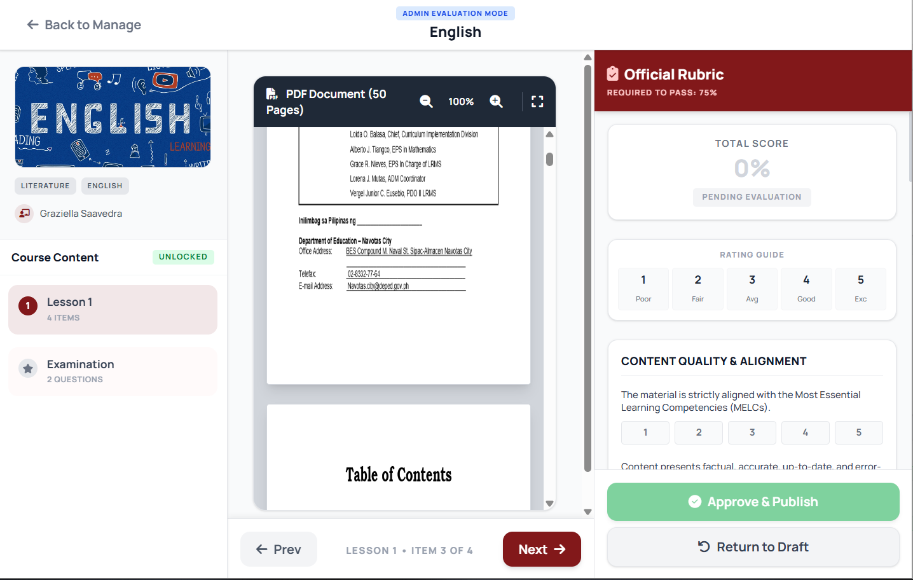
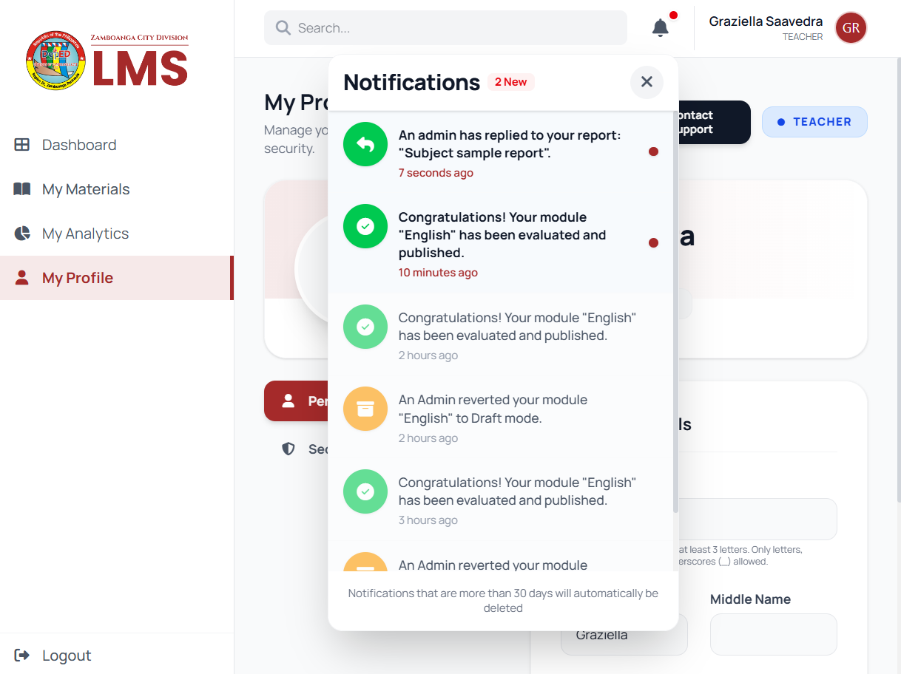

Dynamic Criteria Builder & Notification System
JB
James Benedict
April 10, 2026
Week 7
During the seventh week of my internship, we reached a significant milestone: 75% completion of the Learning Management System. My efforts were primarily dedicated to reinforcing our backend architecture by introducing intelligent, automated features. By centralizing logic within our global layout scripts and building new interactive modules, we have made the platform significantly more robust and ready for real-world application.


A major highlight of this week was the creation of the Dynamic Criteria Builder. This powerful feature allows the Curriculum Implementation Division (CID) to dynamically construct and customize evaluation rubrics on the fly. It provides a structured, visual workflow for assessing educational materials, ensuring that all published content strictly adheres to the department's quality standards without requiring hard-coded backend changes every time a new grading criterion is introduced.

In tandem with the evaluation tools, I engineered a comprehensive Notification System. This addition is crucial for streamlining administrative and educational workflows across the entire LMS. It ensures that instructors, students, and administrative staff receive immediate, in-app alerts regarding material submissions, curriculum approval statuses, and important system updates. This vastly improves communication efficiency and keeps all users engaged and informed.
These implementations were not just about writing code; they were about aligning our technical solutions with the specific administrative standards of the Division. Understanding how the staff manages curriculum approvals and internal communications was a critical learning outcome, proving that good software must be built around the users' actual operational needs.